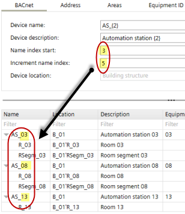

Add devices (Dialog box)
In the Add devices dialog box enter the naming and addressing values of your devices. The default values displayed in the Add devices dialog box are derived from the Settings component.
Settings
➀ Preview of new devices
The initial values displayed in the preview table are derived from the Settings component. The changes you make in the tab area are displayed in the preview table in real-time. If you change, e.g., Start of name index and Increment name index in the BACnet tab ➂ the previewed device names change accordingly.

Each column of the preview table has one or more tab areas where the corresponding settings can be changed.
Autonumbering – Name pattern
Names and descriptions of some of the objects can be automatically extended by a number. The name pattern is defined by a fix part (e.g. AS_ for automation stations) and an auto-number part (e.g. {2} for 2 leading zeros).
Example patterns:
- "B_{2}"
Resulting in names as "B_01", "B_02", "B_09", "B_10", "B_99", "B_100" - "{3}_B"
Resulting in names as "001_B", "002_B", "009_B", "010_B", "999_B", "1000_B" - "B_{1}-ABC"
Resulting in names as "B_1-ABC", "B_2-ABC", "B_9-ABC", "B_10-ABC" - ""
Resulting in names as "1", "2", "9", "10" - "B_"
Resulting in names as "B_1", "B_2", "B_9", "B_10"
Column | Description | Corresponding settings in the tab area |
|---|---|---|
Name | Name of the devices and areas (room, room segment). The name is composed of the name prefix and an index. |
|
Location | The location name is composed of the building structure location and the name of the room, room segment or central function, e.g. B_1' Flr_1'R_1. |
|
Description | Description of the devices. |
|
Equip-ID | Equipment ID of the device. |
|
DHCP | If selected, DHCP is used to automatically configure the IP addresses. The DHCP setting cannot be changed in the table. |
|
Address | IP address of the device. |
|
Hostname | Designated hostname of the device (IP). |
|
Network | Number that identifies the network (MS/TP). |
|
MAC address | First MAC address for the MS/TP port. |
|
Max manager address | Set the Max manager address to prevent the passing of the token to unused MAC addresses situated after the manager (MS/TP). |
|
➁ Toolbar
Command | Description |
|---|---|
Number of new devices | Enter the number of devices you want to create. |
Application template | Displays the selected application template. |
Grid view / Revert to standard view | Toggles the Grid view where you can add multiple devices via smart copy and paste. |
Building structure | Displays the active position within the building structure. |
Smart copy Smart paste | Copy the devices to the clipboard. Use Microsoft Excel to add more devices and edit the values. Paste the table back to ABT Site. |
➂ BACnet tab
Property | Description |
|---|---|
Device name | Builds the device name together with the name index. Default value: Settings > Address defaults > BACnet > Device name prefix |
Device description | Description of the device. Default value: Settings > Address defaults > BACnet > Device description |
Start of name index | The first index number of the device name. This index will be automatically added to the name prefix to build the device name. The following rules apply: ‒ If the Start of name index field is empty, then no index will be added. ‒ Index start can be changed within the defined range. Defined range: Settings > Address defaults > BACnet>BACnet name index start |
Increment name index | Increment of the index number. |
Device location | Only used if device locations are not managed automatically. If the location is managed automatically, the device has the building structure as location (e.g. B_1'Flr_03). If the location is not managed automatically, you can choose the building structure or one of the areas. The areas are listed with the part name as available in the application template. You can change the location management in Settings > Naming defaults > Object names> Manage device location property in building structure |
Use common start index | Select the checkbox > The values given in the Start of name index field and Increment name index field will appear in the Start device instance numberfield and Increment device instance number field. |
Start device instance number | The first device instance number to be used. Numbers between 1 and 4'194'302 are allowed. Default is 1. |
Increment device instance number | The increment value for the given device instance number. |
➃ Address tab
For IP devices | |
|---|---|
Property | Description |
Hostname | Hostname of the device. Note
Default value: Settings > Address defaults > IP |
Use common start index | If selected, the start index and the increment will be used as defined on the BACnet tab, and the start index and increment are disabled. |
Index start | Starting index number This index will be automatically added to the Hostname prefix to build the Hostname. If Index start is empty, then no index will be added. |
Increment | Increment of the index number. |
Use DHCP |
Default setting: Settings > Address defaults > IP |
Start address | The first IP address to be used. The start address can be changed within the defined range. Defined range: Settings > Address defaults > IP |
For MS/TP devices | |
Property | Description |
Network no. | Number that identifies the network. Default value: Settings > Address defaults > MS/TP |
Use auto addressing | When activated, the MAC address settings are obtained automatically. Default setting: Settings > Address defaults > MS/TP |
MAC address start | First MAC address for the MS/TP port. Defined range: Settings > Address defaults > MS/TP |
Increment | Increment of the MAC address. |
Max manager address | Set the Max manager address to prevent the passing of the token to unused MAC addresses situated after the manager. Defined value: Settings > Address defaults > MS/TP |
 Using Dynamic Host Configuration Protocol (IP).
Using Dynamic Host Configuration Protocol (IP). Using IP address and subnet mask (IP). This option generates unique IP addresses for all devices that use this application template.
Using IP address and subnet mask (IP). This option generates unique IP addresses for all devices that use this application template.
➄ Areas tab
Property | Description |
|---|---|
Name | Name of the area (room, room segment, central function). Default value: Settings > Naming defaults > Object names. |
Description | Description prefix of the area. If no prefix and no index is set, then the default values Room, Room segment or Central function are set. Default value: Settings > Naming defaults > Object names |
Use common start index | If selected, the start index and the increment will be used as defined on the BACnet tab, and the start index and increment are disabled. |
Index start | Starting index number. This index will be automatically added to the Name prefix to build the Name of the area. If Index start is empty then no index will be added. |
Increment | Increment of the index number. |
➅ Equipment ID tab
Property | Description |
|---|---|
Equipment ID | Name prefix of the equipment ID, i.e., designation of the device housing. |
Use common start index | If selected, the start index and the increment will be used as defined on the BACnet tab, and the start index and increment are disabled. |
Index start | Starting index number. This index will be automatically added to the Name prefix to build the Name of the equipment ID. If Index start is empty then no index will be added. |
Increment | Increment of the index number. |